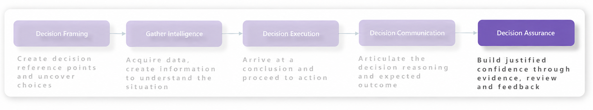
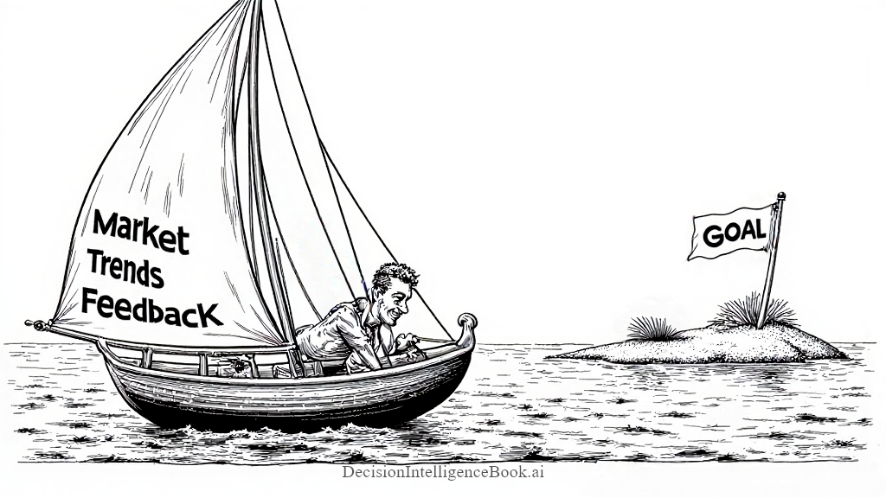
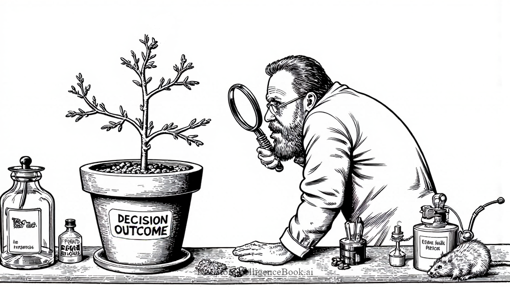

Chapter 1I
Decision Assurance
 Decision Intelligence – Decision Assurance
Decision Intelligence – Decision Assurance

Introducing Decision Assurance¶
Making a decision does not stop the world from changing. You choose a route to work, then discover traffic ahead. A team chooses a project schedule, then encounters an unexpected dependency. The original choice may have made sense, but new evidence can change what makes sense next.
Decision assurance is the risk-proportionate practice of building and maintaining justified confidence that a decision is ready, executed as intended, and evaluated for improvement. It begins before action, continues while the decision is carried out, and uses outcomes to strengthen future decisions. Monitoring is one important assurance activity, but assurance also includes evidence, challenge, controls, clear responsibilities, and agreed responses when conditions change.
Assurance provides reasonable confidence, not certainty and not a guarantee of a favorable outcome. The effort should match the stakes: choosing a lunch location may need only a quick check, while an expensive, irreversible, regulated, or AI-automated decision deserves stronger evidence and more independent challenge. The UK government's Orange Book: Management of Risk – Principles and Concepts similarly connects assurance with confidence in the design, application, and effectiveness of controls used to manage risk and achieve objectives.
Imagine sailing toward an island. Choosing the destination is decision framing. Checking the weather is gathering intelligence. Setting the course is decision execution. Explaining the plan to the crew is decision communication. Decision assurance asks whether we have enough justified confidence to begin and continue the journey. Before departure, we check the route, weather evidence, boat, responsibilities, and conditions that would make us turn back. While sailing, we verify that the crew follows the plan and watch for signals that require a course change. Afterward, we compare the journey with our expectations and carry the lessons into the next voyage.

Three Layers of Decision Assurance¶
On the boat, decision readiness means checking the destination, route, weather assumptions, crew responsibilities, and acceptable risks before departure. Execution integrity means confirming that the chosen course is actually followed, recording deviations, and responding when agreed thresholds are crossed. Outcome validation and learning means comparing the actual journey with the expected destination, timing, costs, and consequences, then improving the current or next voyage.
Evidence arrives at different times. Some information can prevent a weak decision before departure. Some calls for a correction while we are still sailing. Other lessons become clear only after we reach shore. Decision assurance connects all three moments rather than waiting for the final outcome.
The same three layers apply to human intuition, simple decision rules, quantitative models, and AI-assisted decisions. Each layer asks a different assurance question and requires evidence that is appropriate to the stakes.
| Assurance Layer | Core Question | Practices and Evidence |
|---|---|---|
| 1. Decision Readiness | Is the decision fit to proceed? | Review the objective, framing, alternatives, evidence, assumptions, uncertainty, risks, success criteria, owner, and decision rights. |
| 2. Execution Integrity | Is the approved decision being carried out as intended? | Confirm actions, responsibilities, controls, and communication; record overrides and deviations; monitor leading indicators and escalation thresholds. |
| 3. Outcome Validation and Learning | Is the decision achieving its objective, and what should change? | Compare results with expectations, measure benefits, costs, forecast accuracy, and unintended consequences, then assign corrective actions and feed lessons into later decisions. |
In Decision Quality, Carl Spetzler, Hannah Winter, and Jennifer Meyer highlight elements that support readiness: useful alternatives, reliable information, clear trade-offs, and sound reasoning. The feedback emphasis in J. Edward Russo and Paul J.H. Schoemaker's Decision Traps helps us use later evidence to improve how we decide. Assurance becomes useful when evidence supports a clear action: proceed, proceed with conditions, revise, escalate, pause, or stop.
Reasonable Confidence and Outcome Bias¶
Suppose a team estimates an 80% chance of finishing a project on time and decides to proceed because the expected benefits justify the possible delay. The project finishes late. That result alone cannot tell us whether the decision was bad or whether assurance failed. A 20% possibility was always part of the forecast, and choosing another option might have created greater costs. Assurance asks whether the estimate was supportable, the risks and success criteria were clear, the authorized action was followed, and the result was evaluated honestly.
Annie Duke makes this distinction in Thinking in Bets: the quality of a decision and its outcome are different things. For our project, that means reviewing what was known when the team chose its staffing plan, rather than rewriting the reasoning after seeing the delay.
For a human decision-maker, separating the process from the result takes deliberate effort. We may praise a risky shortcut when it happens to work, then criticize a careful choice when it encounters bad luck. Judging the choice only by how it ended is outcome bias. Review the evidence, alternatives, and assumptions available when the staffing decision was made alongside the actual delay and its consequences. This gives the team a fairer basis for learning what to change.
Calibration, Brier scores, and log loss provide quantitative assurance evidence about the probabilities behind our decisions. They compare forecasts with observed outcomes and give us feedback for improving future estimates. They do not prove that the objective was correct, the decision process was sound, the action was implemented properly, or the benefits justified the costs. Those claims require additional evidence.
Build an Assurance-Ready Decision Record¶
Decision records are materialized decisions: durable artifacts capturing what was decided, why it was considered ready, how it was performed, and what happened afterward. They preserve the frame, alternatives, evidence, assumptions, method, recommendation, authorization, and action. The recommendation and action may differ, especially when a person changes or overrides an AI recommendation. Recording both makes that distinction visible and allows execution integrity to be checked.
For people, memory is an unreliable substitute for this record. After a project is late, it can feel as though the warning signs were obvious all along. We may remember successful predictions more readily than mistakes. Recording expectations before the outcome helps counter hindsight and selective memory, so the review can use the information we actually had at the time.
A decision record supports all three assurance layers: it documents readiness before approval, preserves execution evidence while action is underway, and connects outcomes with learning afterward. For our project example, an assurance-ready record could contain:
| Record Item | Example |
|---|---|
| Decision, owner, and decision rights | The project lead is authorized to approve the staffing plan and is accountable for the decision. |
| Risk and assurance level | Treat the decision as moderate risk because delay has customer and cost consequences; require a documented review and one peer challenger. |
| Recommendation and source | The project manager recommends keeping the current team after reviewing the delivery options. Record whether the recommendation came from a person, rule, model, or AI system. |
| Alternatives considered | Keep the current team, add an engineer, or reduce the release scope. |
| Decision method and criteria | Compare delivery risk, cost, scope, customer impact, and reversibility before selecting the staffing plan. |
| Forecast and timestamp | On September 1, estimate an 80% probability of finishing on time. |
| Evidence, provenance, assumptions, and rationale | Record the comparable-project history and supplier schedule, where each item came from, and when it was current; assume requirements remain stable and the supplier delivers by September 15. |
| Readiness criteria and challenge | Confirm that the evidence is current, all three alternatives were compared, the supplier assumption was challenged, and the expected benefit justifies the remaining delay risk. |
| Authorized action, controls, and overrides | Confirm the staffing allocation and communicate the agreed scope and deadline; record approvals, deviations, and any later human override. |
| Leading indicators and escalation triggers | Review supplier progress weekly; escalate if a milestone slips by more than two business days or the on-time forecast falls below 65%. |
| Resolution criteria and deadline | All agreed acceptance tests pass by September 30 at 5 p.m.; use the dated acceptance report as evidence. |
| Actual outcome and consequences | Record whether the criterion was met, plus delivery costs and customer impact. |
| Assurance gaps, corrective action, and lessons | Record which assumptions held, what surprised us, whether a control failed, who owns the response, and what to change before the next decision. |
The record grows as the decision moves from readiness through action to validation. Preserve the original context, assurance criteria, and forecast, then attach dated updates, actions, outcomes, and lessons. If new evidence changes the probability, keep both the original estimate and the revision. This shows what was known at each decision point and why confidence changed.
Independent challenge can make assurance more credible by exposing blind spots or conflicts of interest, but it should be proportionate. A quick personal choice may need only a self-check; a high-stakes or irreversible decision may justify a peer reviewer, specialist, approval gate, or independent evaluator. The decision owner still owns the decision.
Define the outcome before scoring it. “The project went well” is too vague to resolve consistently. A dated acceptance criterion gives everyone the same event to evaluate and helps prevent changing the meaning of success after seeing the result.
Quantitative Evidence for Decision Assurance¶
Decision records capture what we expected, why we believed the decision was ready, how it was carried out, and what actually happened. Math helps us turn some of that evidence into measurements we can compare. Instead of relying on an impression that our decisions are improving, we can examine how often forecasts match reality, measure the size of probability errors, and compare results across similar decisions. Quantitative assurance evidence uses reproducible measurements to test specific claims about decision performance. It gives both human and AI decision-makers a consistent way to check expectations against outcomes.
This matters because confidence and memory alone can give us a misleading picture of performance. A person may remember several successful predictions while overlooking repeated overconfidence, and an AI system may produce convincing explanations while assigning unreliable probabilities. Calibration examines whether stated probabilities match observed frequencies. Brier scores and log loss measure probability errors across resolved forecasts. Together, these tools help test whether probability estimates are becoming more dependable. Their assurance claim is deliberately narrow: the quality of the decision process, execution fidelity, case difficulty, and the costs and benefits of the resulting actions still require separate evidence.
Calibration - Does Confidence Match Reality?¶
Suppose a project lead regularly assigns a 70% chance of finishing on time. Over many comparable projects, we would expect approximately 70 out of every 100 to meet their deadline. Calibration means that forecast probabilities line up with how often events actually happen. We can check this whether the probabilities come from a person, a decision rule, or an AI model.
Consider three hypothetical sets of forecasts about on-time delivery. Each set contains 100 projects, and each forecast in a set assigns the same probability:
| Forecast Probability | Expected On-Time Projects out of 100 | Observed On-Time Projects | Interpretation for This Group |
|---|---|---|---|
| 70% | 70 | 70 | The forecast matches the observed frequency. |
| 90% | 90 | 70 | The forecaster was too confident about on-time delivery. |
| 60% | 60 | 80 | The forecaster was too cautious about on-time delivery. |
The second row suggests overconfidence about finishing on time; the third suggests underconfidence. For probabilities below 50%, remember which outcome the forecaster favors: a 10% chance of finishing on time also means a 90% chance of being late. Real results fluctuate, so even a group of 100 projects cannot prove that a forecaster is calibrated.
A forecast of 70% does not promise that seven of the next ten projects will succeed. With small samples, the observed rate can vary considerably. Also, ten projects sharing one supplier may provide less independent evidence than ten projects with unrelated dependencies. Calibration is a pattern to investigate across repeated observations, not a verdict from one result.
To check calibration across a wider range of forecasts, group them into probability ranges and compare the average forecast with the observed event frequency in each group. A calibration curve, also called a reliability diagram, plots those two quantities. Points near the diagonal indicate agreement. Always check how many observations sit behind each point, since a group of five projects provides much less evidence than a group of 500. The scikit-learn probability calibration guide explains this approach.
Simply counting correct “on time” or “late” labels gives us classification accuracy. Calibration tells us whether the probabilities themselves match what happens. We also want to distinguish projects that are likely to finish on time from projects that need help. That ability is called discrimination. Always forecasting the historical on-time rate might be calibrated across a stable population, while telling us little about which individual projects are most likely to be late.
For human forecasters, this is a useful check on both overconfidence and underconfidence. A project lead may feel certain because a plan is familiar, while another may give cautious estimates even when similar projects usually succeed. Record those probabilities and compare them with later results. Over repeated decisions, each person can see where their confidence needs adjustment. Someone who is well calibrated on familiar projects may still need practice when estimating work in a new domain.
This is where the feedback habits described by Philip E. Tetlock and Dan Gardner in Superforecasting become useful. Record a probability, review the result, and update your expectations as evidence arrives. Repeating that process gives us a way to practice forecasting and find out whether we are improving.
Brier Scores - Measuring Probability Errors¶
An 80% forecast and a 95% forecast both say that finishing on time is more likely than being late. But they leave very different amounts of room for a delay. We need a way to measure that difference once the outcome is known. The Brier score measures the average squared difference between forecast probabilities and binary outcomes.
For our project, let $p$ be the probability of finishing on time, expressed as a decimal. Let $y = 1$ if the project finishes on time and $y = 0$ if it is late. An 80% forecast gives us $p = 0.80$. Subtract the outcome from that probability, then square the difference:
| Actual Outcome | Calculation | Squared Error |
|---|---|---|
| On time: y = 1 | (0.80 − 1)² | 0.0400 |
| Late: y = 0 | (0.80 − 0)² | 0.6400 |
Now raise the forecast to 95%. The error becomes 0.0025 when the project finishes on time, but 0.9025 when it is late. Greater confidence earns a smaller error when correct and a larger error when wrong.
Both rows use the same calculation:
$$ (p-y)^2 $$
Once we have $N$ resolved forecasts, add their squared errors and divide by $N$ to get the average:
$$ \text{Brier score} = \frac{1}{N}\sum_{i=1}^{N}(p_i-y_i)^2 $$
We use the binary 0–1 convention, where lower is better. Zero means the forecasts assigned certainty to the outcomes that occurred. One is the worst possible score. Some sources add errors across both outcome categories and report a 0–2 scale, so check the convention before comparing numbers. The Brier score documentation describes both conventions.
A 50% forecast produces an error of 0.25 either way. That makes it a useful arithmetic reference, but not a universal benchmark: an established historical event rate can be a more informative baseline. A score of 0.16 also does not mean “16% of decisions were wrong.” It is an average squared probability error, not a percentage of incorrect labels.
Log Loss - The Cost of Confident Errors¶
Now imagine a forecaster who repeatedly says a project is almost certain to finish on time. When a project is late, that forecast left very little room for what actually happened. Log loss measures the negative logarithm of the probability assigned to the observed outcome. It gives a particularly large penalty when that outcome was assigned almost no probability.
Use the same $p$ for the probability of finishing on time and $y$ for the outcome. At $p = 0.80$, an on-time project was assigned probability 0.80, while a late project was assigned probability $1-p = 0.20$. Log loss takes the natural logarithm of whichever probability matches the outcome, then reverses the sign. We write the natural logarithm as $\ln$.
For example, an on-time project gives a loss of −ln(0.80) ≈ 0.2231. A late project gives −ln(0.20) ≈ 1.6094. The table below shows what happens as the forecast becomes more confident:
| Forecast of On-Time Delivery | Loss if On Time | Loss if Late |
|---|---|---|
| 80% | −ln(0.80) ≈ 0.2231 | −ln(0.20) ≈ 1.6094 |
| 95% | −ln(0.95) ≈ 0.0513 | −ln(0.05) ≈ 2.9957 |
| 99% | −ln(0.99) ≈ 0.0101 | −ln(0.01) ≈ 4.6052 |
Notice how the penalty for a late project increases as the forecast leaves less room for that possibility. You do not need to calculate logarithms in your head to see the lesson: being confidently wrong carries a large penalty under log loss.
For an on-time project, the individual loss is $-\ln(p)$. For a late project, it is $-\ln(1-p)$. Across $N$ resolved forecasts, the formula selects the appropriate loss for each outcome and averages the results:
$$ \text{Log loss} = -\frac{1}{N}\sum_{i=1}^{N}\left[y_i\ln(p_i)+(1-y_i)\ln(1-p_i)\right] $$
The log loss documentation uses this definition and the natural logarithm convention.
Lower log loss is better. It starts at zero and has no finite upper limit. Assigning probability one to the observed outcome gives zero loss. Assigning zero probability to what occurs gives an infinite theoretical loss. Software commonly clips probabilities slightly away from zero and one so the calculation stays finite. That handles the numerical problem, but the forecast still needs to account for outcomes that could occur.
Decision Assurance Scenario - Same Accuracy, Different Probability Quality¶
Imagine two forecasters evaluating the same ten projects before their outcomes are known. Forecaster A assigns every project an 80% chance of finishing on time. Forecaster B assigns every project 95%. Both use a 50% threshold to produce an “on time” label. Eventually, eight projects finish on time and two finish late.
| Resolved Projects | Number of Projects | Outcome y | Forecaster A | Forecaster B |
|---|---|---|---|---|
| Projects 1–8 | 8 | 1 | 0.80 each | 0.95 each |
| Projects 9–10 | 2 | 0 | 0.80 each | 0.95 each |
Both forecasters have 80% classification accuracy because both labeled all ten projects “on time.” But their probabilities expressed different expectations about delays. Scoring those probabilities reveals the difference.
Calculating the Aggregate Scores¶
For the Brier score, multiply each individual squared error by the number of matching outcomes, add the errors, and divide by ten:
$$ \text{Brier}_{A} = \frac{8(0.80-1)^2+2(0.80-0)^2}{10} = \frac{8(0.04)+2(0.64)}{10} = 0.1600 $$
$$ \text{Brier}_{B} = \frac{8(0.95-1)^2+2(0.95-0)^2}{10} = \frac{8(0.0025)+2(0.9025)}{10} = 0.1825 $$
For log loss, average the negative log probabilities of the observed outcomes:
$$ \text{Log loss}_{A} = -\frac{8\ln(0.80)+2\ln(0.20)}{10} \approx 0.5004 $$
$$ \text{Log loss}_{B} = -\frac{8\ln(0.95)+2\ln(0.05)}{10} \approx 0.6402 $$
The logarithms are calculated at full precision before rounding the final averages.
| Assurance Measure | Forecaster A: 80% | Forecaster B: 95% | Interpretation |
|---|---|---|---|
| Classification accuracy | 80% | 80% | Both produce the same labels. |
| Brier score | 0.1600 | 0.1825 | A has lower average squared probability error. |
| Log loss | 0.5004 | 0.6402 | A assigns the observed outcomes higher probability overall. |
Forecaster B receives smaller losses on the eight on-time projects, but the two late projects outweigh that advantage. A scores better on this particular set of outcomes. This is a hypothetical arithmetic illustration, not evidence that ten observations establish reliable calibration or that 80% is the right probability for future projects.
These scores reward honest probabilities over repeated forecasts. If you knew the true probability of each event, reporting it would give the lowest expected loss. This property is what makes Brier score and log loss proper scoring rules. However, a lower score can reflect better separation of likely and unlikely events, as well as better calibration. The uncertainty of the events also affects the scores. Check the probability groups alongside the overall score to understand what improved. The calibration guide explains these differences.
For assurance, the supported conclusion is limited but useful: on this resolved set, A's probabilities fit the outcomes better under both scoring rules. It is not evidence that A used a better decision process in every respect or that A will outperform B on future projects.
Also, neither score measures the value of the staffing decision directly. Avoiding a delay might require expensive extra capacity. Choosing whether to buy that capacity requires the probability estimate together with the costs, benefits, and available alternatives.
Turning Assurance Evidence into Action¶

Decision assurance becomes valuable when evidence changes what we do next. A scientist examining an experiment compares what was expected with what actually happened, checks the method, and states the limits of the conclusion. A decision-maker can do the same: Were delays random surprises, did we repeatedly underestimate supplier dependencies, or was the approved plan not followed?
For the project lead, measuring supplier delays is useful if it helps decide when to add a contingency. That connection between measurement and action is a practical lesson from Douglas W. Hubbard's How to Measure Anything. Choose measurements that help answer the decision in front of you.
The human side of this review matters too. If every missed forecast is treated as a personal failure, people may become reluctant to record uncertainty or acknowledge mistakes. Pressure to sound certain can also encourage probabilities that reflect what a manager wants to hear. Review the recorded evidence and reasoning, allow people to explain what surprised them, and agree on a specific improvement with an owner. People can be accountable for following a sound process without being expected to predict every outcome correctly.
A practical assurance cycle can follow these steps:
- State the assurance question and possible action. Decide whether the evidence will support proceeding, proceeding with conditions, revising, escalating, pausing, or stopping. A review without a decision it can influence easily becomes ceremony.
- Resolve and validate the evidence consistently. Match outcomes to the recorded criteria, check provenance and execution records, and keep unresolved cases separate. Show how many forecasts have resolved because early results may not represent the full group.
- Compare with a meaningful baseline and look for patterns. Score the current approach and a historical base-rate forecast on the same cases. Review probability groups, project types, time periods, and sample sizes before reacting. A worsening score might reflect harder projects or changing conditions rather than a weaker process.
- Choose and own the response. If supplier-dependent projects are consistently overestimated, gather better supplier evidence, revise the probabilities, add a contingency rule, or escalate the decision. Record the response, owner, due date, and remaining uncertainty.
- Evaluate the change on later outcomes. Preserve the earlier record and compare the revised approach on new cases. Improving a score on the same observations used to design the change is not sufficient evidence of improvement.
When comparing forecasts, also keep the lead time consistent. A prediction made one day before delivery has more information than one made three months earlier. Mixing them can make a forecasting process appear to improve simply because it is predicting closer to the outcome.
A run of late projects might reveal a supplier problem, or it might reflect normal variation. Nate Silver explores the difficulty of separating useful evidence from noise in The Signal and the Noise. For our project reviews, the lesson is to investigate repeated patterns, account for uncertainty, and update when conditions change.
Track decision consequences alongside forecast scores: delivery costs, customer outcomes, and the cost of interventions. If extra staffing improves delivery rates, record that action too. Outcomes reflect what people actually did; we cannot directly observe what the same project would have done under a different staffing plan. This helps prevent attributing every improvement to a better forecast.
Assurance evidence can return to any earlier step of the Decision Intelligence Framework. We might need a different frame, better information, a revised execution rule, clearer communication, or a different objective. Sometimes the appropriate response is to keep the current approach and collect more evidence.
Confidence should also be refreshed when something material changes: the objective, evidence, assumptions, environment, model, responsible people, or action. Assurance is therefore maintained across the decision lifecycle rather than awarded once and forgotten.
Decision Assurance with Generative AI¶
Generative AI can produce recommendations, probability estimates, explanations, and tool-driven actions, so the decisions it supports need assurance across their lifecycle. A fluent explanation does not establish that the evidence is reliable, the forecast is calibrated, the action is authorized, or the result is worthwhile. The NIST AI Risk Management Framework Core organizes AI risk work around Govern, Map, Measure, and Manage and emphasizes continuous activity across the AI lifecycle. That guidance can inform practical decision assurance without turning every use of AI into a formal audit.
Assure decision readiness. Define the intended use, affected people, objective, risk tolerance, and conditions under which AI should not be used. Record the evidence and assumptions supplied to the model, their provenance and freshness, relevant model and prompt versions, tools, the recommendation, and any probability forecast. Evaluate representative cases before use and compare with an appropriate human, rule-based, or historical baseline. Higher-stakes uses may warrant specialist or independent challenge.
Assure execution integrity. Record the model inputs and outputs needed for review, tool calls, validation and guardrail results, the recommendation presented to a person, and the action actually taken. Define who may approve, change, or override the recommendation and when the case must be escalated. Monitor operational signals such as invalid outputs, missing evidence, tool failures, overrides, or a material change in context. A successful model response is not proof that the authorized decision was carried out correctly.
Return to the ten-project example, where eight projects finished on time and two were late. Forecasting 80% for every project gives a Brier score of 0.1600 and log loss of 0.5004, whether those estimates came from a project lead, a Generative AI model, or a person working with AI. Forecasting 95% gives 0.1825 and 0.6402, respectively. Both sets still have 80% classification accuracy under the same 50% threshold. The calculations depend on the probabilities and outcomes, not on who produced the forecasts. The small example illustrates the arithmetic; it does not establish that either people or AI are generally better calibrated.
For a useful human-versus-AI comparison, score the same cases using the same outcome criteria and forecast lead time, and account for differences in the information available. Keep the original forecasts when people revise an AI estimate or when new evidence arrives. Otherwise, we may end up comparing an early human forecast with an AI forecast made after most of the uncertainty has disappeared.
Validate outcomes and learn. Define the event and deadline clearly, compare recorded forecasts with verified results, and track benefits, costs, harms, and unintended consequences. If an AI repeatedly assigns approximately 70% probability to comparable events, check whether approximately 70% occur over many observations. Brier scores and log loss test the probabilities of resolved events; reviewing evidence quality, reasoning, controls, and execution remains separate. Establish triggers to revise, restrict, escalate, pause, or stop the AI-assisted workflow when evidence no longer supports confidence.
Use the records to investigate repeated errors and decide what to change. The AI may need better evidence, a revised prompt, a different tool, stronger validation, narrower authorization, or a change to the decision rule around its recommendation. Record the change and evaluate it on later cases using the same outcome criteria and scoring methods. Saving feedback does not itself improve a model, and a more persuasive explanation does not demonstrate better decisions.
Generative AI can also help people review the records. For example, a project lead could ask: “Review these resolved forecasts and their scores. Identify recurring assumptions in delayed projects, distinguish recorded facts from possible explanations, and suggest one change to evaluate next month.” The model can organize the review and suggest patterns to investigate; the lead still checks the supporting records and decides which improvement to test.
Decision assurance improves decision-making when confidence is supported by explicit claims, proportionate evidence, responsible execution, and honest learning. It does not remove uncertainty; it makes the basis, limits, and consequences of acting under uncertainty easier to understand and improve.